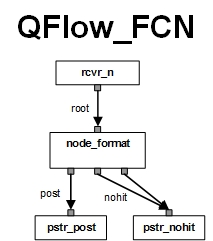

QBroker is a JMS Message broker that hosts multiple JMS Message Flows. A generic JMS Message Flow contains three types of nodes, ReceiverNode, PersisterNode and MessageNode. ReceiverNode is to pick up messages from various data sources, such as JMS destinations, RDBMS, NoSQL DB, and other data services. PersisterNode is to deliver messages to various data stores, such as JMS destinations, RDBMS, NoSQL DB, and other data services. MessageNode is to process messages for various purposes, such as parsing, formating, routing, sorting, selecting, aggregating, etc. A Message Flow should have minimum two nodes, a ReceiverNode for picking up JMS Messages and a PersisterNode for delivery. In general, a Message Flow can have multiple ReceiverNodes, MessageNodes and PersisterNodes. All the nodes should be linked to at least another node so that the messages can flow from one node to another. With all nodes linked together, the Message Flow will process JMS Messages just like a production pipeline.
QBroker can be a Java standalone application container running as a daemon with multiple deployed message flows. It can also run inside a standard webapp container such as Tomcat, JBoss, etc. Each message flow is an application that consists of the interlinked message nodes, well designed for each category of message operations. Each node is running on a dedicated thread and communicates with the linked nodes via the internal queues. A ReceiverNode has the only one link for output. A PersisterNode has the only one link for input. A MessageNode has the only one input link and at least one output link. A given link can be shared by multiple nodes with or without partitions. Those message nodes are the building blocks for applications, just like the plastic blocks of Lego. Together, they constitute one or several Message Flows. Each Message Flow is also a decision tree for the messages. QBroker is a container managing all message flows. It also provides monitor services, shared reports, cluster support and on-demand reload.
There are many popular Java application containers, such as Spring and J2EE. Why do we care of QBroker as a Java application container? Well, the major difference is that there is no need to write your Java code in most of common scenarios if you use QBroker. Think about a similar case with Apache web server. It is well known that there are a lot of Apache modules available. In most of the cases, you just need to download the right modules for your needs and configure them for Apache container. Once tested, you will have a decent web server that meets all your needs. Similarly for QBroker, there are many modules available in terms of MessageNode, MessageReceiver and MessagePersister. So you can use the avaliable nodes to assemble applications without any coding. You just need to figure out what nodes to use and how they are linked together to build a MessageFlow for your needs. The plumbing job is simple, just having two linked nodes share the same name of XQueue. The configuration of each node will be a bit of challenge. The best way to learn is to start with existing examples.
QBroker is actually a JMS application container. It hosts multiple JMS applications in terms of Message Flows. Since each flow has multiple nodes, QBroker is also the container for those nodes. Therefore, it is not difficult to add new functionalities by developing new nodes. In fact, QBroker is an open source project. If you are interested in the development of QBroker, please visit GitHub. Thanks to the JMS standard, QBroker supports all JMS vendors and their implementations. QBroker runs OK in an environment of mixed JMS implementations. In fact, we are able to run QBroker in a mixed environment of WebSphere MQ, WebLogic JMS, SunOne MQ, Open MQ, Glassfish JMS, JBoss MQ, JBoss Messaging, Active MQ, Oracle AQ and SonicMQ. Besides, QBroker provides certain services that can be shared by all nodes. With these shared services, any node will be able to correlate its behavior with other non-linked nodes. One of the services is MonitorReport instances and their test reports. Any node will be able to access the test reports and control the part of flow.
Currently, there are two types of containers developed for QBroker project. The first one is MonitorAgent hosting multiple message flows. The other is QFlow hosting a single message flow. According to the idea of micro-service, QFlow will be our focus. From now on, when we talk about the project, the term of QBroker will be used. But for any instance of message flow, QFlow will be used. The two terms will be interchangeable in the context. Here is an example of QFlow instance with one MessageNode, one MessageReceiver and two MessagePersisters. It is used to listen to the flow control notifications from a SonicMQ broker. The flow will format the data into JSON and persists them to a centralized EventCollector.
QFlow also provides the cluster support as a plug-in, ClusterNode. Currently, the ClusterNode has been implemented with Multicast, Unicast and Serial Port Communication. You sure can implement the ClusterNode with other transports, like TCP or even JMS. With the cluster feature configured, you can have multiple distributed instances of QFlow to host the same message flows. In this way, you can achieve load balance and/or high availability.
QFlow is a light-weight JMS application that is fully configurable. You can set up a very complicated flow with many nodes. Or you can decompose the flow into several small flows. Therefore, you can easily distribute the load across CPU processors or machines. If WebAdmin is available, it can be used to manage the configuration repository for QFlow. WebAdmin is powered by javascript at the client side, QFlow at the middle tier and PostgreSQL at the backend. It is a web based toolset designed for generic applications. For aplications like QFlow, it allows you to manage its configuration repository and carry out the routine operation tasks via web browsers such as Chrome or Safari.
QFlow requires the latest qbroker-1.2.4.jar. The source code is at GitHub. If any JMS implementation is used, QFlow also requires the vendors' jar files and their JNDI services. If the implementation is not pure Java, you also need to add their shared libraries in the library path. All the tested JMS providers are listed here .
You can install QBroker on any directories. QFlow instance can run as any user also. But for a simple installation, we assume the installation directory is /opt/qbroker and it is owned by qbadm:qb. Since QFlow is a part of QBroker, it may be already installed for MonitorAgent. But if not, it is quite simple. If your box has web access to https://yannanlu.github.io, it will be really simple. You just need to login on the box and run the followinig command to have it installed:
wget -O - https://yannanlu.github.io/misc/installQB.sh | sudo bashIn some cases, the web access to https://yannanlu.github.io may not be allowed. So you will have to download the tar ball and the installation script from https://yannanlu.github.io. Then you need to copy them to the box for the installation. Here is the procedure with the step-by-step tasks:
wget --no-check-certificate https://75.131.197.149/qbroker.tgz wget https://yannanlu.github.io/misc/installQB.sh
sudo bash ./installQB.sh .
On the same installation, you can have multiple instances of QFlow configured. An instance of QFlow is also called an instance of a message flow. To set up a new message flow instance, you will need to complete certain tasks manually. First you need to choose a name for the instance. The name of the instance is used to identify the instance. By the naming convention, the name of the instance should be UNIQUE and always in UPPERCASE. For example, we have the names of EVENT for EVENT flow, STATS for STATS flow. The ID of the instance is always QF_NAME.
The configuration files of QFlow are actually a set of JSON files. For a given instance of NAME, there is a master configuration file in /opt/qbroker/flow/NAME. The name of the master configuration file is Flow.json. The rest of configuration files live in the same folder. If you do not find the directory named after NAME, you need to create one and put your configuration files there. Since QFlow is designed as a container and there are many message nodes available, to configure an instance of QFlow is just like to play a Lego game. You just need to define each components in their own json files and link them together in the master configuration file.
Even though it is most challenge to configure each individual components of QFlow, you can always copy the files from an existing instance and modify them. If you need help on a specific component, please feel free to ask the developers or Yannan Lu. In case WebAdmin is available, it should be used to manage the configuration repository for QFlow. Alternatively, you can also manually create and modify the configuration files.
In the master configuration file, the log directory is specified. You have to make sure the directory exists and writeable by the owner. You also need to create two startup scripts for your new instance. The first one is QFlow_NAME.sh in /opt/qbroker/bin. You can copy it from the files of other instances and make necessary changes on the ID, the owner, CLASSPATH and directories. Please make sure all the jar files are included in the CLASSPATH. Otherwise, the instance will not start. The second script is S50QFlow_NAME in /opt/qbroker/init.d. You can copy it from other instances and make necessary changes on the ID and the owner.
To start the instance of the QFlow, you should always use the WebAdmin tool. Alternatively, you can also run the following command on the box: /opt/qbroker/init.d/S50QFlow_NAME start where please replace NAME with the name of the instance.
If you are lucky, QFlow's process will be running as a daemon. Otherwise, you need to troubleshoot the problem if it fails to start. Run /opt/qbroker/init.d/S50QFlow_NAME status to check if the process is running or not. The instance is supposed to log to the file of QFlow_NAME.log in the log directory specified in the master configuration file. The standard errors will be logged into QFlow_NAME.out. They are two excellent sources for troubleshooting.
Here is an example of master configuration file, Flow.json:
{
"Name": "Flow",
"Site": "DEVOPS",
"Type": "QFlow",
"Category": "FCN",
"Operation": "move",
"XAMode": "0",
"Capacity": "256",
"Mode": "daemon",
"LogDir": "/var/log/qbroker",
"LogDatePattern": "'.'MM",
"ConfigDir": "/opt/qbroker/flow/FCN",
"EscalationCapacity": "64",
"Heartbeat": "60",
"Debug": "49",
"MaxNumberFlow": "1",
"ConfigRepository": "repository_flow",
"AdminServer": {
"ClassName": "org.qbroker.receiver.ServerReceiver",
"URI": "tcp://localhost:7727",
"Operation": "respond",
"Capacity": "64",
"Partition": "0,32",
"EOTBytes": "0x0a",
"TextMode": "1",
"Template": "##body##\n",
"Parser": {
"ClassName": "org.qbroker.event.EventParser"
},
"RestartScript": "/bin/bash -c \"/opt/qbroker/init.d/S50QFlow_FCN restart &\""
},
"Reporter": [
"rpt_global_var"
],
"Receiver": [
"rcvr_n"
],
"Node": [
"node_format"
],
"Persister": [
"pstr_post",
"pstr_nohit"
]
}
In the master configuration file above, you will see two parts. The first part is the properties for the container of QFlow itself. It specifies how often to run each of reporter components (heartbeat in second), where to log and where to find other configurations, etc. The second part lists all the ReceiverNodes, PersisterNodes, MessageNodes and Reporters. The definition of each node should be either in the master file or in a separate json file in the same folder.
In this example, we have a flow with one receiver instance to pick up messages from the SonicMQ's broker. A format node formats the messages. There are two output links on the node. One goes to pstr_post and the other goes to pstr_nohit. Those two persister nodes are connected to post and nohit, respectively. They channel all messages to their destinations. The details will be explained in the examples later.
QFlow supports the remote control and query synchronously via AdminServer. In order to enable this feature, you have to define the AdminServer in the master configuration file. AdminServer is a plugin to QFlow for direct queries or controls. If it is defined, the user will be able to query or modify the status of the instance of the QFlow directly. Here is an example of the definition:
{
...
"AdminServer": {
"Name": "admin",
"ClassName": "org.qbroker.net.SimpleHttpServer",
"URI": "https://localhost:7727/admin/jms",
"Operation": "handle",
"Capacity": "64",
"Partition": "0,32",
"KeyStoreFile": "/opt/qbroker/flow/keystore.jks",
"KeyStorePassword": "xxxx",
"TrustAllCertificates": "true",
"Timeout": "10",
"RestartScript": "/bin/bash -c \"/opt/qbroker/bin/agentctl restart &\""
},
...
}
where TrustAllCertificates is set to true for client queries in case
keystore.jks is self signed.
QFlow supports the configuration repository and the on-demand reload via ConfigRepository. If it is configured and enabled, the AdminServer will accept requests to reload the configurations from the repository. This way, there is no need to restart or bounce the application in most of common cases. Here is an example of the definition for ConfigurationRepository:
{
"Name": "repository_flow",
"ClassName": "org.qbroker.monitor.PropertyMonitor",
"Site": "DEVOPS",
"Category": "WDAP",
"Description": "Web JSON Configuration Repository",
"Step": "1",
"Tolerance": "1",
"MaxRetry": "2",
"MaxPage": "2",
"QuietPeriod": "12",
"ExceptionTolerance": "2",
"URI": "http://panda:8082/flow/FCN/flow.json",
"Username": "omadm",
"Password": "xxxx",
"MaxBytes": "0",
"Pattern": "Last-[mM]odified: (\\w+, \\d+ \\w+ \\d+ \\d+:\\d+:\\d+\\.\\d+ \\w+)",
"DateFormat": "EE, dd MMM yy HH:mm:ss.SSS zz",
"Timeout": "60",
"IgnoredField": ["LastModified"],
"Basename": "Flow",
"IncludeGroup": {
"ConfigRepository": "",
"Flow": ["Receiver", "Node", "Persister", "Reporter"]
},
"PropertyFile": "/opt/qbroker/flow/FCN/Flow.json",
"DependencyGroup": [{
"Dependency": [{
"Name": "repo_flow",
"ClassName": "org.qbroker.monitor.URLMonitor",
"URI": "http://panda:8082/flow/FCN/flow.json",
"Operation": "HEAD",
"Username": "omadm",
"Password": "xxxx",
"MaxBytes": "0",
"Pattern": "Last-[mM]odified: (\\w+, \\d+ \\w+ \\d+ \\d+:\\d+:\\d+ \\w+)",
"DateFormat": "EE, dd-MMM-yy HH:mm:ss zz",
"Timeout": "60",
"TimeOffset": "0"
}]
}],
"ActiveTime": {
"TimeWindow": [{
"Interval": "00:00:00-24:00:00"
}]
}
}
where URI specifies the repository. This is the definition of the monitor
object for configuration repository only. To enable it, you will still need to
add the reference entry to the master configuration file of the container
as follows:
{
...
"ConfigRepository": "repository_flow",
...
}
The reload works on MessageNode, MessagePersister and MessageReciever. For receivers and persisters, the reload will just replace them via instantiations. For nodes, the reload process depends on the changes of the nodes. If there is changes on the uplink and/or outlinks, the instance will be replaced. Otherwise, only the rulesets will be reloaded. On the node level, only changes on Debug, DisplayMask and StringProperty will be reloaded in this case.
QFlow supports Cluster features via the ClusterNode that is a plugin to QFlow for load balance and/or high availability. To enable this feature, you have to define ClusterNode in the master configuration file. Here is an example of the definition:
{
...
"ClusterNode": {
"Name": "cluster",
"URI": "udp://237.10.10.1:12345",
"Heartbeat": "10",
"SessionTimeout": "30",
"MaxGroupSize": "2",
"ExtraReceiver": { // extra path for redundancy, optional
"Name": "extra",
"URI": "udp://237.10.10.1:22345",
"Interface": {
"panda1": "eth1",
"panda2": "eth1"
}
}
},
...
}
where URI defines a Multicast group, and Heartbeat is the interval in second
for the cluster nodes to exchange heartbeat messages. The SessionTimeout
defines how many seconds to wait if there is no heartbeat messages received.
The MaxGroupSize is the size of the cluster. ExtraReceiver defines the
redundant path for inter-node communications. It is optional. In case there
is a crossover cable between two boxes, it will be a good idea to configure
the ExtraReceiver.
In most of the production scenarios, the cluster needs just two nodes. If there are only two nodes required, Unicast cluster is a better choice since there is no restrictions on the same subnet as required by Multicast group. you can set up a two-node cluster in two separated data centers. Here is an example:
{
...
"ClusterNode": {
"Name": "unicast",
"ClassName": "org.qbroker.cluster.UnicastNode",
"URI": "udp://##hostname##:12345",
"Heartbeat": "10",
"SessionTimeout": "30",
"Member": ["panda1", "loon1"],
"ExtraReceiver": { // extra path for redundancy, optional
"Name": "observer",
"URI": "wmq://panda2:1414",
"QueueName": "OBSERVER",
"MessageSelector": {
"panda1": "JMSType='loon1'",
"loon1": "JMSType='panda1'"
}
}
},
...
}
where the two nodes are running on two different Data Centers, respectively.
They communicate with each other via Unicast UDP packets.
It is well known that two-node cluster sharing the only one communication path
is not stable at all. If the only communication path breaks, there will be two
masters. To enhance the reliability and stability, the extra communication
path is configured in this example. As you can see, both nodes share the same
JMS queue, OBSERVER, in the first Data Center. As long as either path is up, the
inter-node communications will always be OK. In real production scenarios,
it is recommended to set up a VIP on two nodes for the observer.
A reporter is a MonitorAgent component without actions. Container will update the shared report with the result. To learn about MonitorAgent, you may check this link, MonitorAgent.
Here is a example for QueueMonitor:
{
"Name": "panda1_q",
"ClassName": "org.qbroker.wmq.QueueMonitor",
"Site": "DEVOPS",
"Category": "QBROKER",
"Description": "JMS Queue monitor",
"URI": "wmq://panda1",
"QueueName": "DATA_IN",
"WaterMark": "20000"
}
Since there is no action associated with the reporter, there is no need to
define an ActiveTime for the TimeWindows.
Another example of Reporter is to set global variables via the static report for the container:
{
"Name": "rpt_global_var",
"ClassName": "org.qbroker.monitor.StaticReport",
"Site": "DEVOPS",
"Type": "StaticReport",
"Category": "STATIC",
"Description": "define a set of globals for message flows",
"Step": "1",
"ReportName": "GlobalProperties",
"ReportClass": "org.qbroker.flow.QFlow",
"StringProperty": {
"hostname": "##hostname##",
"HOSTNAME": "##HOSTNAME##",
"Repos_URL": "http://localhost:8082",
"Template": "${hostname} ${HOSTNAME} ${Repos_URL}"
}
}
where it defines a set of global variables for QFlow container at the startup.
Therefore, all the nodes in the container will be able to reference those global
variables, such as ${hostname}, in their instantiation stage. It is
really helpful if you are trying to deploy the same set of configuration files
to multiple environments. You just only need to update rpt_global_var.json. In
fact, StaticReport is also able to pick up properties from either a property
file or a set of environment variables. Here is an example:
{
"Name": "rpt_env_var",
"ClassName": "org.qbroker.monitor.StaticReport",
"Site": "DEVOPS",
"Type": "StaticReport",
"Category": "STATIC",
"Description": "define a set of globals for message flows",
"Step": "1",
"ReportName": "GlobalProperties",
"ReportClass": "org.qbroker.flow.QFlow",
"EnvironmentVariable": {
"My_Scope": "Scope",
"My_URL": "Repos_URL",
"My_Policy": "Policy"
},
"StringProperty": {
"hostname": "##hostname##",
"HOSTNAME": "##HOSTNAME##",
"Template": "${hostname} ${HOSTNAME} ${Repos_URL} ${Scope} ${Policy}"
}
}
where it defines a map with the names of environment variables and the keys for
the report. It will try to pick up the values for each of the names as the
environment variables. Hence, those values will be saved under the keys for the
report so that they will be referenced by the keys. The precedence of
environment variables is the highest while that of inline properties the lowest.
MessageFlow is the core of QBroker. It is the representation in terms of the workflow for applications. Here is the list of message flows with flow charts and the brief descriptions:
| Name | JPG | Description |
|---|---|---|
| CONSOLE | CONSOLE.jpg | workflow for WebAdmin |
| STATS | QFlow_STATS.jpg | workflow for MonitorAgent stats feeds |
| EVENT | QFlow_EVENT.jpg | message flow for MonitorAgent events |
| FCN | QFlow_FCN.jpg | message flow for SonicMQ's flow-control notifications |
Here is the list of steps to set up a new message flow on a box hosting the flow:
cp QFlow_STATS.sh QFlow_MYFLOW.sh
cp S50QFlow_STATS S50QFlow_MYFLOW
Once the message flow is set up on the box, you can use WebAdmin to configure the message flow and deploy the configurations to the box.
MessageReceiver is a message producer. It picks up data from the given data source specified by URI. The data will be converted into JMS messages if the data source is neither a JMS Queue nor a JMS Topic. The incoming messages will be put into the internal XQueue, specified by LinkName. Therefore, the linked MessageNodes will be able to process them based on the business rules.
The configuration of MessageReceiver is easy. The developers of each MessageReceiver implementations are supposed to document it in detail. Currently, there are 15 implementations of MessageReceiver available. Their javadoc is here. For configuations, here is the list of them with brief descriptions. Currently, there are 15 implementations of MessageReceiver available. Here is the list with brief description.
| Receiver | ClassName | Description |
|---|---|---|
| DocumentReceiver | org.qbroker.receiver.DocumentReceiver | DocumentReceiver monitors a document-oriented database and retrieves the documents from it via a query |
| FileReceiver | org.qbroker.receiver.FileReceiver | FileReceiver monitors on a file, or a web page on a server and retrieves the content from it |
| HeartbeatGenerator | org.qbroker.receiver.HeartbeatGenerator | Heartbeator periodically generates time sequence events of JMS messages |
| JDBCReceiver | org.qbroker.receiver.JDBCReceiver | JDBCReceiver monitors a JDBC data source and retrieves the records from it via a query |
| JMSReceiver | org.qbroker.receiver.JMSReceiver | JMSReceiver listens on a JMS Queue and receives JMS messages from it |
| JMSSubscriber | org.qbroker.receiver.JMSSubscriber | JMSSubscriber subscribes on a JMS Topic and receives JMS messages on it |
| JMXReceiver | org.qbroker.receiver.JMXReceiver | JMXReceiver listens to JMX notifications from a JMX service |
| LogReceiver | org.qbroker.receiver.LogReceiver | LogReceiver listens on a log file and fetches all new entries as the messages |
| LogScissor | org.qbroker.receiver.LogScissor | LogScissor periodically monitors the size of a remote logfile and renames the file into a new name with a sequentical id for retrieving |
| PacketReceiver | org.qbroker.receiver.PacketReceiver | PacketReceiver listens to a UDP socket and receives packets from it |
| QServlet | org.qbroker.flow.QServlet | QServlet serves HTTP requests for a flow |
| RMQReceiver | org.qbroker.receiver.RMQReceiver | RMQReceiver listens to a RabbitMQ queue and receives messages from it |
| RedisReceiver | org.qbroker.receiver.RedisReceiver | RedisReceiver listens to a Redis list or channel and receives messages from it |
| ServerListener | org.qbroker.receiver.ServerListener | ServerListener listens to a ServerSocket and accepts socket connections from it for various services |
| ServerReceiver | org.qbroker.receiver.ServerReceiver | ServerReceiver listens to a ServerSocket and accepts socket connections from it. It then receives byte streams from the socket |
| StreamReceiver | org.qbroker.receiver.StreamReceiver | StreamReceiver listens to an InputStream and receives byte stream from it |
The task to configure an instance of MessageReceiver is pretty challenge, simply because there are many different properties for each implementation. The best practice is to find an example and start to modify it. However, most of the properties are COMMON. Others are implementation specific. Among the common properties, some of them are mandatory. Others are optional. Here is the table listing all the common properties:
| Property Name | Data Type | Requirement | Description | Examples |
|---|---|---|---|---|
| Name | alphanumeric with no spaces | mandatory | name of the receiver | rcvr_qb |
| ClassName | alphanumeric with no spaces | mandatory | full classname of the implementation | org.qbroker.receiver.JMSRecevier |
| URI | URL string | mandatory | URI of the message source | wmq://broker1 |
| Username | string | optional | username for connection | guest |
| Password | string | optional | password for connection | guest |
| Operation | alphanumeric with no spaces | mandatory | operation of the receiver | get |
| LinkName | alphanumeric with no spaces | mandatory | name of the internal XQueue for output | root |
| Capacity | integer | optional | capacity of the internal XQueue | 128 (default value is determined by the linked node) |
| Partition | string of two numbers separated by a comma | optional | partition of the internal XQueue | 0,8 (default: determined by container) |
| Mode | string of deamon or utility | optional | mode for deamon or utility | deamon (default: utility) |
| XAMode | integer | optional | on/off transcation control | 1 (default: 1 for on) |
| TextMode | integer | optional | what message family to create for non-JMS data source only | 0 (default: 1 for TextMessages) |
| DisplayMask | integer | optional | the mask controls what to log on the incoming messages | 6 (default: 0) |
| StringProperty | map | optional | for setting the user properties on incoming messages | see example |
| ReceiveTime | integer | optional | timeout in milli-second for receive | 500 (default: 1000) |
| MaxNumberMessage | integer | optional | max number of messages to receive | 0 (default: 0 for no limit) |
| Timeout | integer | optional | timeout in milli-second for retry sessions | 1000 (default: 2000) |
| PauseTime | integer | optional | timeout in milli-second for retries | 2000 (default: 5000) |
| StanbyTime | integer | optional | timeout in milli-second for standby | 10000 (default: 15000) |
| Tolerance | integer | optional | number of times of retries without reconnection | 1 (default: 2) |
| MaxRetry | integer | optional | number of times of reconnection in a session | 1 (default: 1) |
| QuietPeriod | integer | optional | number of times of retry without logging | 2 (default: 4) |
Here is an example of JMSReceiver:
{
"Name": "rcvr_qb",
"ClassName": "org.qbroker.receiver.JMSReceiver",
"URI": "wmq://broker1",
"QueueName": "QB_IN",
"Operation": "get",
"LinkName": "root",
"Mode": "daemon",
"XAMode": "1",
"DisplayMask": "0",
"StringProperty": {
"Hostname": "broker1"
}
}
where Mode is explicitly set to daemon so that the receiver keeps
listening on the queue forever. XAMode controls the transaction of messages
as long as the source supports it. If it is set to 1, the received messages
must be acknowledged by their persisters. If XAMode is set to 0, all the
received messages will be auto acknowledged by the receiver. DisplayMode
controls what to display on received messages in the log. StringProperty
contains name and value pairs for setting properties on the incoming messages.
If certain global variables are defined in the container, they can be used in the configuration of receivers. By default, URI and LinkName support the global variables. A global variable is something like: ${xxx} where xxx is the name of the global variable. During the instantiation of the receiver, all the global variables will be resolved as long as they are defined in the container. One of the usages of global variables is to define host specific environment variables.
QFlow, as a container, supports the simple template that contains only one place holder for a group of similar receivers. In this case, all the receivers in the same group share the same template that will be used to generate the real copy of configuration for each of the receiver. A receiver template is just a configuration with a single variable such as ##yyy##. Since the name of the receiver instance has to be listed in the container, that name will be generated from a template on a list of values for the place holder. Here is an example of queue_in:
{
"Name": "rcvr_queue",
"ClassName": "org.qbroker.receiver.JMSReceiver",
"URI": "${msgURI}",
"QueueName": "##queue##",
"LinkName": "root",
"Operation": "get",
"DisplayMask": "18",
"Mode": "daemon",
"XAMode": "1",
"Tolerance": "0",
"MaxRetry": "2"
}
where ##queue## is the place holder, and ${msgURI} the global
variable. In the master configuration, Flow.json, we have
{
...
"Receiver": [{
"Name": "rcvr_queue",
"Template": "rcvr_##queue##",
"Item": [
"aa",
"bb",
"cc",
"bkr"
]
},
...
}
where Name references the receiver template, rcvr_queue,
Template defines the template for the name of the receiver,
and Item lists the value of the place holder for rcvr_queue.json.
With the only one receiver template, therefore, we have defined 4 different
receivers. Among them, the first receiver has the name of rcvr_aa. All
the receivers share the same URI that will be resolved by the global
variable of ${msgURI}.
To view examples and manuals on other receiver nodes, please click on the name on the receiver list.
MessagePersister is a message consumer. It picks up messages from the internal XQueue specified by LinkName. Then it delivers them to the given data store specified by URI. The content of the messages will be delivered if the data store is a JMS destination. Therefore, the messages processed by the flow will be able to be persisted to their data store.
The configuration of MessagePersister is easy. The Developers of each MessagePersister implementations are supposed to document it in detail. Currently, there are 19 implementations of MessagePersister available. Their javadoc is here. For configuations, here is the list of them with brief descriptions.
| Persister | ClassName | Description |
|---|---|---|
| AWSRequester | org.qbroker.persister.AWSRequester | AWSRequester sends rest requests to an AWS service via the messages |
| DocumentPersister | org.qbroker.persister.DocumentPersister | DocumentPersister updates a document-oriented database via the content of the messages |
| EventPersister | org.qbroker.persister.EventPersister | EventPersister invokes actions upon the events |
| FilePersister | org.qbroker.persister.FilePersister | FilePersister stores messages into local or remote files |
| JDBCPersister | org.qbroker.persister.JDBCPersister | JDBCPersister updates a JDBC data source based on the content of the messages |
| JMSPersister | org.qbroker.persister.JMSPersister | JMSPersister puts messages to a JMS queue |
| JMSPublisher | org.qbroker.persister.JMSPublisher | JMSPublisher publishes messages on a JMS Topic |
| JMXPersister | org.qbroker.persister.JMXPersister | JMXPersister queries JMS Destination info/metrics on a JMX server |
| JobPersister | org.qbroker.persister.JobPersister | JobPersister persists long running messages as jobs |
| LogPersister | org.qbroker.persister.LogPersister | LogPersister appends messages into a logfile |
| MessageEvaluator | org.qbroker.persister.MessageEvaluator | MessageEvaluator evaluates Messages according to predefined rulesets |
| MonitorPersister | org.qbroker.persister.MonitorPersister | MonitorPersister invokes reports and actions |
| PacketPersister | org.qbroker.persister.PacketPersister | PacketPersister sends the content of the messages to a UDP socket |
| PersisterPool | org.qbroker.persister.PersisterPool | PersisterPool manages multiple pools of on-demand persisters |
| RMQPersister | org.qbroker.persister.RMQPersister | RMQPersister publishes JMS messages with certain keys to a RabbitMQ exchange |
| ReceiverPool | org.qbroker.persister.ReceiverPool | ReceiverPool manages multiple pools of on-demand receivers |
| RedisPersister | org.qbroker.persister.RedisPersister | RedisPersister publishes content of JMS messages with certain keys to a Redis list or channel |
| ServerPersister | org.qbroker.persister.ServerPersister | ServerPersister listens on a ServerSocket and accepts the socket connections from it |
| StreamPersister | org.qbroker.persister.StreamPersister | StreamPersister writes the content of messages to an OutputStream |
The task to configure an instance of MessagePersister is pretty challenge, simply because there are many different properties for each implementation. The best practice is to find an example and start to modify it. However, most of the properties are COMMON. Others are implementation specific. Among the common properties, some of them are mandatory. Others are optional. Here is the table listing all the common properties:
| Property Name | Data Type | Requirement | Description | Examples |
|---|---|---|---|---|
| Name | alphanumeric with no spaces | mandatory | name of the persister | pstr_q |
| ClassName | alphanumeric with no spaces | mandatory | full classname of the implementation | org.qbroker.persister.JMSPersister |
| URI | URL string | mandatory | URI of the message destination | wmq://broker1 |
| Username | string | optional | username for connection | guest |
| Password | string | optional | password for connection | guest |
| Operation | alphanumeric with no spaces | mandatory | operation of the persister | put |
| LinkName | alphanumeric with no spaces | mandatory | name of the internal XQueue for input | root |
| Capacity | integer | optional | capacity of the internal XQueue | 128 (default value is determined by the linked node or container) |
| XAMode | integer | optional | on/off transcation control | 1 (default: 1 for on) |
| MaxIdleTime | integer | optional | number of seconds to disconnect if idled for too long | 600 (default: 0 for off) |
| MaxNumberMessage | integer | optional | max number of messages to persist | 0 (default: 0 for no limit) |
| DisplayMask | integer | optional | the mask controls what to log on the outgoing messages | 6 (default: 0) |
| StringProperty | map | optional | controls what properties to log on the outgoing messages | see example |
| WaitTime | integer | optional | timeout in milli-second for receive | 50 (default: 500) |
| SleepTime | integer | optional | number of milli-seconds to sleep between deliveries | 500 (default: 0) |
| Timeout | integer | optional | timeout in milli-second for retry sessions | 1000 (default: 2000) |
| PauseTime | integer | optional | timeout in milli-second for retries | 2000 (default: 5000) |
| StanbyTime | integer | optional | timeout in milli-second for standby | 10000 (default: 15000) |
| Tolerance | integer | optional | number of times of retries without reconnection | 1 (default: 2) |
| MaxRetry | integer | optional | number of times of reconnection in a session | 1 (default: 1) |
| QuietPeriod | integer | optional | number of times of retry without logging | 2 (default: 4) |
Here is an example of JMSPersister:
{
"Name": "pstr_esb",
"ClassName": "org.qbroker.persister.JMSPersister",
"URI": "wmq://panda",
"QueueName": "ESB",
"Operation": "put",
"LinkName": "esb",
"XAMode": "1",
"DisplayMask": "6",
"StringProperty": {
"Hostname": ""
}
}
where XAMode controls the transaction of messages as long as the destination
supports it. If it is set to 1, after the delivery the messages must be
committed by the persister. DisplayMode controls what to display on persisted
messages in the log.
If certain global variables are defined in the container, they can be used in the configuration of persisters. By default, URI and LinkName support the global variables. A global variable is something like: ${xxx} where xxx is the name of the global variable. During the instantiation of the persister, all the global variables will be resolved as long as they are defined in the container. One of the usages of global variables is to define host specific environment variables.
QFlow, as a container, supports the simple template that contains only one place holder for a group of similar persisters. In this case, all the persisters in the same group share the same template that will be used to generate the real copy of configuration for each of the persister. A persister template is just a configuration with a single variable such as ##yyy##. Since the name of the persister instance has to be listed in the container, that name will be generated from a template on a list of values for the place holder. Here is an example of pstr_queue:
{
"Name": "pstr_queue",
"ClassName": "org.qbroker.persister.JMSPersister",
"URI": "${msgURI}",
"QueueName": "##queue##",
"Operation": "put",
"LinkName": "##queue##",
"XAMode": "1",
"Persistence": "1",
"DisplayMask": "22",
"Tolerance": "0",
"MaxRetry": "2"
}
where ##queue## is the place holder, and ${msgURI} the global
variable. In the master configuration, Flow.json, we have
{
...
"Persister": [{
"Name": "pstr_queue",
"Template": "pstr_##queue##",
"Item": [
"abc",
"xyz",
"nohit"
]
},
...
}
where Name references the persister template, queue_out,
Template defines the template for the name of the persister,
and Item lists the value of the place holder for queue_out.xml.
With the only one persister template, therefore, we have defined 3 different
persisters. Among them, the first persister has the name of pstr_abc.
All the receivers share the same URI that will be resolved by the global
variable of ${msgURI}.
To view examples and manuals on other persister nodes, please click on the name on the persister list.
MessageNode is a process unit on messages in a message flow. It has one intput XQueue, specified by LinkName, and multiple output XQueues listed by OutLink. It picks up JMS messages from the input queue and processes them according to the content and rulesets. Once it is done with a message, the node will propagate the message to the proper output XQueue. This way, the messages are able to flow through the nodes along the flow as designed.
A MessageNode may contain a number of predefined rulesets. A ruleset has a message filter that contains certain Perl5 patterns used to match the content of the messages. The filter is used to select messages for the ruleset. Therefore, the incoming messages are categorized into non-overlapping groups. Each ruleset has its own unique message group to process. The ruleset also specifies certain operations and/or the association with the outlinks. When a message is picked up by the node, the node will apply each filter one by one on the message to see which filter gets a hit. In most cases, the ruleset with the first hit will be applied on the message. If none of the rulesets hits, the default NOHIT ruleset will be applied. In fact, MessageNode always adds an extra ruleset for nohit messages. This nohit ruleset always has the id of 0. In another word, MessageNode is also a decision point in the decision tree for messages. It contains multiple branches and out paths.
The configuration of MessageNode is kind of challenge. The developers of each MessageNode implementations are supposed to document it in detail. Currently, there are 33 implementations of MessageNode available. Their javadoc is here. For configuations, here is the list of them with brief descriptions.
| Node | ClassName | Description |
|---|---|---|
| ActionNode | org.qbroker.node.ActionNode | ActionNode processes incoming JMS messages and takes the predefined actions according to the rulesets and the content of the incoming messages |
| AggregateNode | org.qbroker.node.AggregateNode | AggregateNode aggregates JMS messages according to their content and the predefined rulesets |
| CacheNode | org.qbroker.node.CacheNode | CacheNode caches responses for Messages |
| CascadeNode | org.qbroker.node.CascadeNode | CascadeNode evaluates messages with cascading rulesets |
| CollectNode | org.qbroker.node.CollectNode | CollectNode assigns messages to various destinations as the requests according to their content and preconfigured rulesets, and then collects them |
| DeliverNode | org.qbroker.node.DeliverNode | DeliverNode delivers JMS messages with various URIs to the on-demand destinations |
| DispatchNode | org.qbroker.node.DispatchNode | DispatchNode dispatches JMS messages to various destinations according to their content, and preconfigured rulesets |
| DistinguishNode | org.qbroker.node.DistinquishNode | DistinquishNode filters out the duplicated JMS messages based on the unique keys and only delivers the distinct messages |
| DuplicateNode | org.qbroker.node.DuplicateNode | DuplicateNode duplicates JMS messages to multiple destinations |
| EventCorrelator | org.qbroker.node.EventCorrelator | EventCorrelator correlates Messages according to predefined rulesets |
| EventDispatcher | org.qbroker.node.EventDispatcher | EventDispatcher dispatches Messages according to predefined rulesets |
| EventMonitor | org.qbroker.node.EventMonitor | EventMonitor keeps tracking Messages according to predefined rulesets |
| FormatNode | org.qbroker.node.FormatNode | FormatNode formats JMS Message body and header fields according to rulesets |
| FreeMarkerNode | org.qbroker.node.FreeMarkerNode | FreeMarkerNode retrieves the data model from the incoming JMS message and applies a FreeMarker template to it. The result will be set to the message body |
| JobNode | org.qbroker.node.JobNode | JobNode manages and schedules various jobs |
| JSONPathNode | org.qbroker.node.JSONPathNode | JSONPathNode parses JSON payload of JMS TextMessages, retrieves data from the JSON payload according to the predefined JSONPath expressions. It then sets them into message as the properties |
| JSONTNode | org.qbroker.node.JSONTNode | JSONTNode formats JSON payload of JMS Messages according to the predefined JSON Template or scripts. |
| MapReduceNode | org.qbroker.node.MapReduceNode | MapReduceNode picks up JMS messages as the requests and maps the each request to multiple destinations and collects the responses from them. |
| MonitorNode | org.qbroker.node.MonitorNode | MonitorNode provides monitors on-demand |
| ParserNode | org.qbroker.node.ParserNode | ParserNode parses JMS Message body and extracts properties out of it |
| PickupNode | org.qbroker.node.PickupNode | PickupNode picks up messages from various on-demand sources |
| PipeNode | org.qbroker.node.PipeNode | PipeNode controls message through put |
| PublishNode | org.qbroker.node.PublishNode | PublishNode publishes Messages with topics and delivers them to their subscribers |
| RequestNode | org.qbroker.node.RequestNode | RequestNode processes Messages as requests with asynchronous responses |
| ScreenNode | org.qbroker.node.ScreenNode | ScreenNode screens JMS messages according to their content and the predefined rulesets |
| ScriptNode | org.qbroker.node.ScriptNode | ScriptNode runs scripts process payload and properties of JMS messages |
| SelectNode | org.qbroker.node.SelectNode | SelectNode parses JMS Message body and selects items into messages |
| ServiceNode | org.qbroker.node.ServiceNode | ServiceNode provides on-demand services via JMS messages |
| SortNode | org.qbroker.node.SortNode | SortNode sorts JMS messages according to their content and the predefined rulesets |
| SpreadNode | org.qbroker.node.SpreadNode | SpreadNode spreads Messages from various source destinations |
| SwitchNode | org.qbroker.node.SwitchNode | SwitchNode switches JMS messages to various destinations according to their content, and preconfigured rulesets |
| XPathNode | org.qbroker.node.XPathNode | XPathNode parses XML payload of JMS TextMessages, retrieves data from the XML payload according to the predefined XPath expressions. It then sets them into message as the properties |
| XSLTNode | org.qbroker.node.XSLTNode | XSLTNode transforms XML payload of JMS TextMessages into various formats based on the XSL templates |
With all of the available nodes, you can actually build a message flow to accomplish most of the tasks. If there is no certain functionality within the available nodes, you may just develop a new one and share it with others. In fact, MessageNode is an open API. If you are interested in the development of your own MessageNode, please visit QFlow for Developers.
The task to configure an instance of MessageNode is pretty challenge, simply because there are many different properties for each implementation. The best practice is to find an example and start to modify it. However, most of the properties are COMMON. Others are implementation specific. Among the common properties, some of them are mandatory. Others are optional. Here is the table listing all the common properties:
| Property Name | Data Type | Requirement | Description | Examples |
|---|---|---|---|---|
| Name | alphanumeric with no spaces | mandatory | name of the node | node_switch |
| ClassName | alphanumeric with no spaces | mandatory | full classname of the implementation | org.qbroker.node.SwitchNode |
| Operation | alphanumeric with no spaces | mandatory | operation of the node | switch |
| LinkName | alphanumeric with no spaces | mandatory | name of the internal XQueue for input | root |
| Capacity | integer | optional | capacity of the internal XQueue for input | 128 (default value is determined by the container) |
| XAMode | integer | optional | on/off transcation control | 1 (default: 1 for on) |
| MaxNumberRule | integer | optional | maximum number of rulesets | 32 (default: 512) |
| WaitTime | integer | optional | timeout to receive messages in milli-second | 20 (default: 50) |
| Debug | integer | optional | debug mask | 31 (default: 0) |
| DisplayMask | integer | optional | the mask controls what to log on the incoming messages | 6 (default: 0) |
| StringProperty | map | optional | controls what properties to log on the processed messages | see example |
| Ruleset | list | mandatory | list of rules for processing messages | see example |
| OutLink | list | mandatory | list of internal XQueues as the message outlets | see example |
The operation of a MessageNode is executed via the pre-defined rulesets. Therefore, the configuration of the rulesets is critical to the operations of a MessageNode. The details of a ruleset depend on the implementations. However, there are some common properties, as follows.
| Property Name | Data Type | Requirement | Description | Examples |
|---|---|---|---|---|
| Name | alphanumeric with no spaces | mandatory | name of the ruleset | event |
| ClassName | alphanumeric with no spaces | optional | full classname of the plugin | org.qbroker.event.EventParser |
| PreferredOutLink | alphanumeric with no spaces | optional | name of the preferred outlink | QB_IN |
| JMSPropertyGroup | list | optional | list of Pattern groups on properties to select messages | see example |
| XJMSPropertyGroup | list | optional | list of Pattern groups on properties to exclude messages | see example |
| PatternGroup | list | optional | list of Pattern groups on body to select messages | see example |
| XPatternGroup | list | optional | list of Pattern groups on body to exclude messages | see example |
| StringProperty | map | optional | for displaying the properties on messages in the logs | see example |
| DisplayMask | integer | optional | mask for logging of messages | 6 |
There are two groups of filters. The first one, JMSPropertyGroup, is applied on the message properties. The other, PatternGroup, is on the message body. Here is an example of JMSPropertyGroup:
{
...
"JMSPropertyGroup": [{
"JMSType": "^json$",
"url": "^https?:"
},{
"site": "^DEVOPS$",
}],
...
}
where there are two sets of patterns. The first set is on two properties,
JMSType and url. It selects the messages if both patterns match the properties.
The second one has only one pattern. It selects the messages if the message has
the property of site with the value of DEVOPS. The logic
relationship among the multiple pattern sets is OR. Therefore, any
messages with either pattern set matched will be selected.
Here is an example of PatternGroup for message body:
{
...
"PatternGroup": [{
"Pattern": ["^https:", "httptrap"]
},{
"Pattern": ["Error:"]
}],
...
}
where there are two sets of patterns. The first set requires the message body
containing https: and httptrap. The second requires the pattern
of Error:. Again, the logic relationship among the multiple pattern sets
is OR. Therefore, any messages with either pattern set matched will be
selected.
OutLink is a list with all the output XQueues for the node. There are two forms to define an outlink, simple form and full form. The simple form is just listing the name of the XQueue. The rest of the parameters will be assumed to be same as the default values of the node. The full form defines all parameters, such as Capacity, Partition, etc. Here is an example of an outlink in its simple form.
{
...
"OutLink": [
"log",
"failure",
"nohit"
]
}
where failure is the name of the output XQueue. Please do not mix the
name of an outlink with the name of a persister. In fact, the name of an
outlink is same as the LinkName of the linked persister or the linked node.
In the example of above, therefore, there is a node or a persister linked to the
node via the XQueue of failure. Here is another example of an outlink
in the full form.
{
...
"OutLink": [
"log",
"failure",
{
"Name": "nohit",
"Capacity": "64",
"Partition": "16,16"
}
]
}
where Partition specifies the range of cells in the given XQueue. The first
number is the index or the id for the beginning cell of the XQueue. The 2nd
number is the number of cells in the partition. So the Partition of 16,16
means the 16 cells from cell 16 through cell 31.
Here is an example of SwitchNode:
{
"Name": "node_switch",
"ClassName": "org.qbroker.node.SwitchNode",
"Description": "switch events",
"Operation": "switch",
"LinkName": "switch",
"Capacity": "1024",
"DisplayMask": "0",
"Debug": "1",
"Ruleset": [{
"Name": "bypass",
"Type": "preferred",
"PreferredOutLink": "null",
"JMSPropertyGroup": [{
"site": "^DEFAULT$",
"category": "^EVENT$"
}]
},{
"Name": "syslog",
"Type": "preferred",
"PreferredOutLink": "data",
"JMSPropertyGroup": [{
"type": "^syslog$",
"name": "cache_log$"
}]
}],
"OutLink": [
"null",
"data",
"bymin"
]
}
where this node has two rulesets and two outlinks.
If certain global variables are defined in the container, they can be used in the configuration of nodes. A global variable is something like: ${xxx} where xxx is the name of the global variable. During the instantiation of the node, all the global variables will be resolved as long as they are defined in the container. One of the usages of global variables is to define host specific environment variables.
To view examples and manuals on other nodes, please click on the name on the node list.
QBroker is an ongoing open source project at GitHub.
{kind=link}
{kind=link}
{kind=link}
{kind=link}